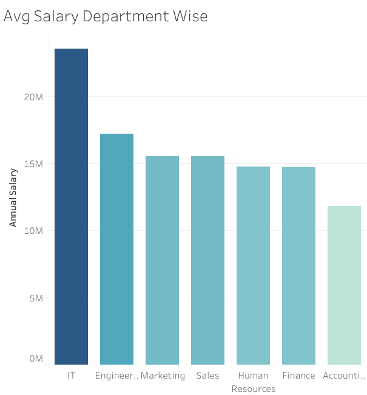
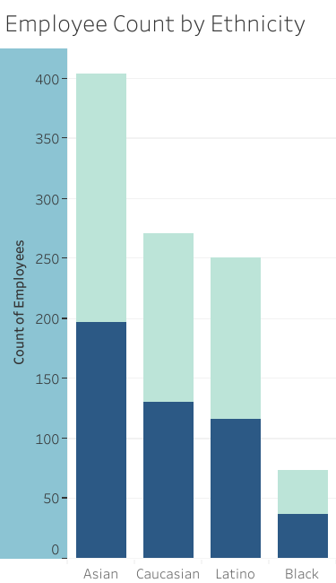
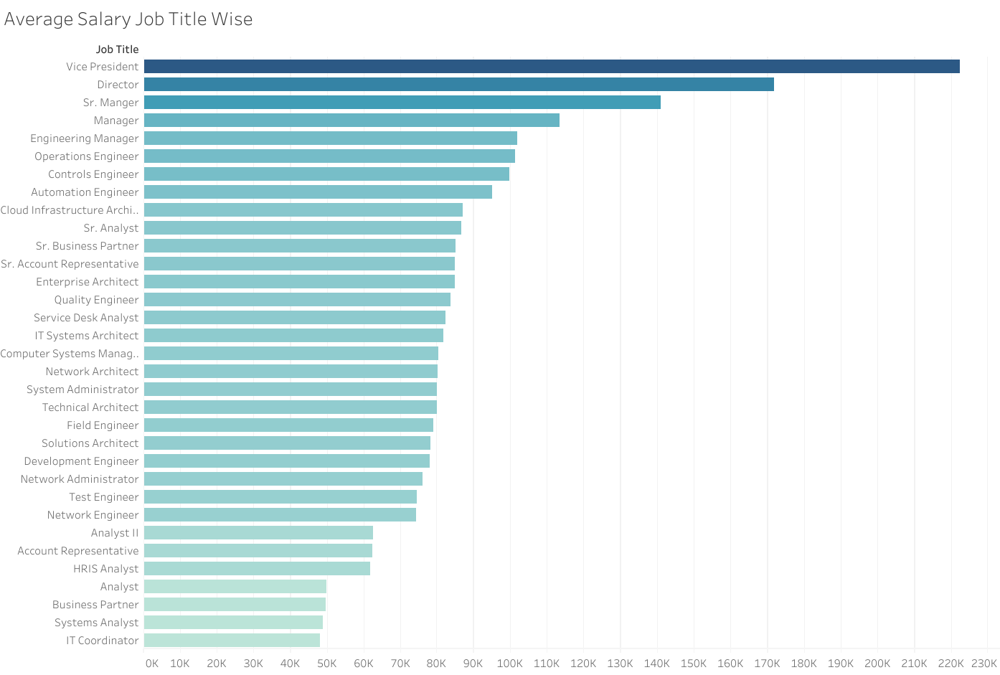
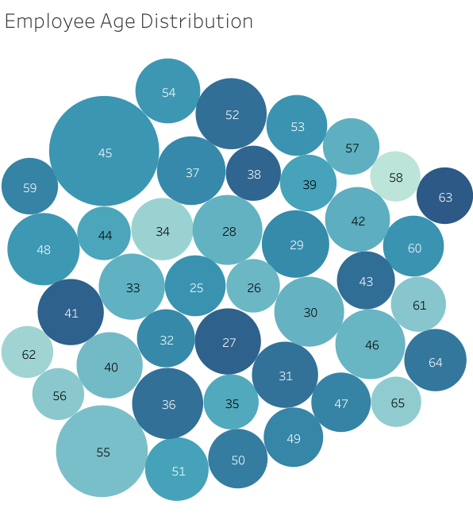

Objective
The primary objective of the Workforce Insights Dashboard is to empower organizational stakeholders with a comprehensive and visually intuitive platform for gaining deep insights into the composition and dynamics of the workforce.
Facilitate Informed Decision-Making : Provide decision-makers, HR professionals, and stakeholders with easily accessible and interpretable data, enabling them to make informed decisions related to workforce planning, resource allocation, and strategic initiatives.
Promote Diversity and Inclusion : Foster an inclusive organizational culture by presenting clear visualizations of demographic distribution, including age, ethnicity, and gender. This supports efforts to enhance diversity and inclusion strategies within the workplace.
Data-Driven Workforce Planning : Serve as a strategic tool for workforce planning by offering actionable insights into workforce trends, allowing organizations to align their human resources with broader organizational goals and adapt to changing market conditions.
Key Findings
1. Departmental Salary Analysis:
Key Finding: The IT department boasts the highest average salary within the organization, standing at 24 million, underscoring the strategic importance and competitive compensation structure within the IT sector.
Results: This finding provides clarity on the salary benchmarks within different departments, aiding in strategic resource allocation and compensation planning. The company can leverage this information to attract and retain top talent in the IT sector and align compensation strategies with market trends.
2. Demographic Diversity Overview:
Key Finding: The company exhibits a notable demographic landscape, with the highest representation of Asians among ethnic groups. Females account for 54% of the workforce, illustrating a commitment to gender diversity.
Results: This demographic breakdown offers a comprehensive view of the organization's diversity profile, reflecting a commitment to inclusivity and equal representation. The company can use this information to inform targeted diversity and inclusion initiatives, fostering a workplace culture that embraces diverse backgrounds and perspectives.
3. Hiring Trends Analysis:

Key Finding: A compelling trend reveals a consistent increase in hiring over the years, indicating organizational growth and a proactive approach to talent acquisition.
Results: The analysis of hiring trends provides a historical context for workforce expansion, enabling better scalability planning and resource allocation. This insight guides the company in anticipating future workforce needs, ensuring that recruitment efforts align with organizational growth objectives.
4. Highest-Paid Job Title:
Key Finding: The position of Vice President emerges as the highest-paid job title, providing insights into critical leadership roles and guiding compensation strategies for executive positions.
Results: Understanding the highest-paid job title informs executive compensation strategies, ensuring competitiveness in attracting and retaining top-tier leadership talent. The company can use this information for benchmarking and strategic recruitment efforts for key leadership positions.
5. Average Employee Age:
Key Finding: The average age of employees across the organization is 44, indicating a mature and experienced workforce.
Results: This finding offers insights into the collective experience of the workforce, influencing strategies related to career development, mentorship programs, and succession planning. The company can tailor programs to cater to the preferences and aspirations of a more seasoned workforce, enhancing employee engagement and retention.